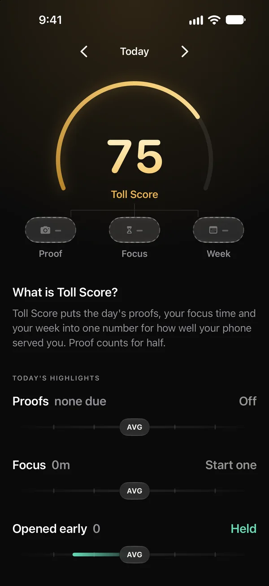
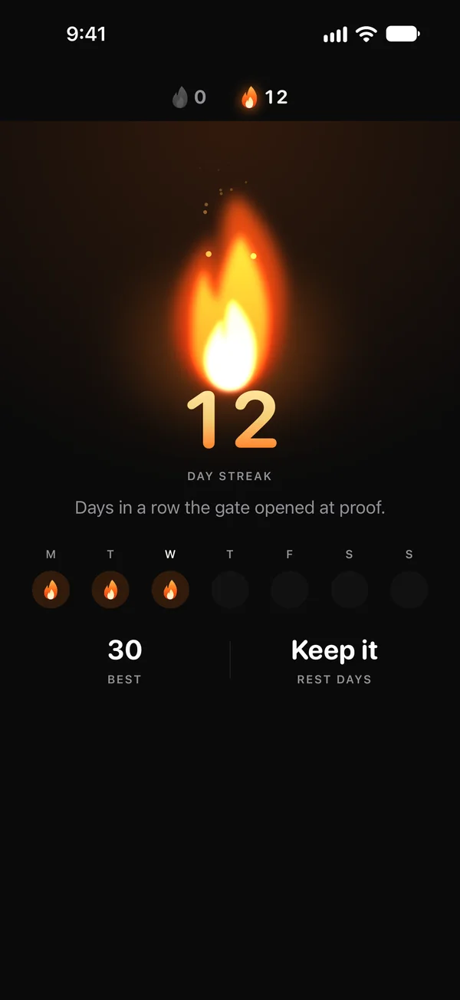
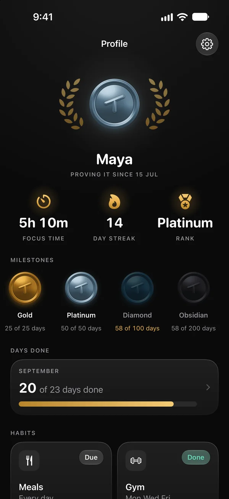

Habits with proof, for iPhone
Gate opens
at proof.
Toll keeps the apps you choose behind a gate until you prove today's habit with a photo from the live camera, checked on your iPhone.



How it works
Three steps, every day.
Pick the apps and the habits
The gym, meals, study, a run, a walk with the dog, or a habit of your own. While one is due, the apps you chose are shielded.
Prove it with a photo
From the live camera, checked on your iPhone in a moment. A desk with your notes, your plate, the gym.
The gate opens for the day
The apps come back until tomorrow, and the streak grows by a day.
What you get
Strict where it counts. Kind where it matters.
The apps wait
Shields from Apple's Screen Time, not tricks. The apps stay on your Home Screen and open the moment the gate does.
Proof, on the phone
Apple's on-device models check the photo. It is never stored and never leaves your iPhone.
Streaks, ranks, a score
A streak that burns, seven ranks from Iron to Obsidian, and Toll Score for how the day went.
Focus sessions
Shut the gate for 15 minutes to 3 hours, proof or not. It opens by itself at the end, even with Toll closed.
Strict by choice
Gate lock and Hard lock are off until you turn them on, and each has a way out that needs no one. Two rest days a month keep the streak.
No account, no tracking
No sign-up, no server of its own, no ads, no analytics. Your history lives on your iPhone and in your own iCloud.
Coming to the App Store.
Toll is in its last checks before release. It runs on iPhone with iOS 26.1 or later.